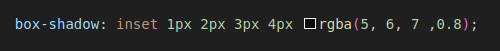

Let's dive into the world of CSS gradients! Imagine painting your website with not just one color, but a smooth, seamless blend of shades. That's the magic of the color gradient property. Imagine sunsets, glowing buttons, or backgrounds that fade like a polaroid dream – that's what gradients can add to your web design game!
Why are gradients so awesome? Well, for starters, they break up the flatness that can happen with solid colors. They add depth and dimension, making your elements pop! Whether you want a subtle shift for a background or a bold statement for a button, gradients can be your best friend.

Types Of Gradient & Breakdown Of The Values
- Linear-Gradient:
- Degree: How the gradient will flow.
- Stop: Where the transitions mix and mingle.
- Colors: Choice of colors separated by commas.
- Radial-Gradient:
- Shape: Determines if your gradient is a circle (circle) or an oval (ellipse).
- Stop: where the transitions happen.
- Size: Sets how big your gradient will be. You can go for the farthest corner (farthest-corner), the farthest side (farthest-side), the closest side (closest-side), or the closest corner (closest-corner).
- Position: Where do you want the center of your gradient to be? (center is the default, but you can customize!).
Bonus: You can layer multiple gradients using background-image? Mind. Blown. Experiment and make some super trippy visuals – your websites will thank you!
EthanDotLog's Color-Gradient Generator
Base Selections:
# Of Colors:
Style:
i am just filler..... dont mind me
Color #1:
Stop %:
opacity:
Color #2:
Stop %:
opacity:
Color #3:
Stop %:
opacity:
Color #4:
Stop %:
opacity:
Color #5:
Stop %:
opacity:
Your Custom Gradient